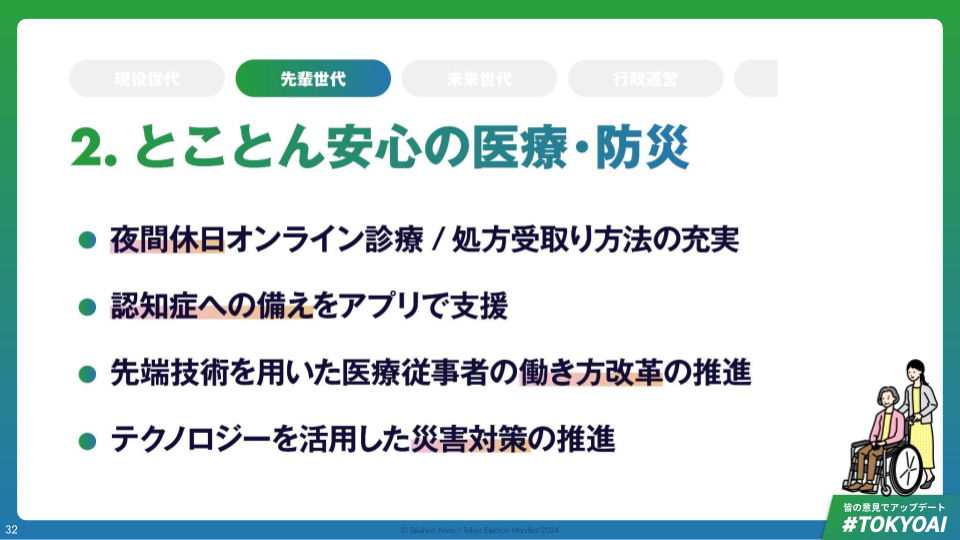

【先輩世代】とことん安心の医療・防災

とことん安心の医療・防災
- 現状認識・課題意識
- 医師の働き方改革と、高齢化社会のピークを迎える社会の医療体制維持の両立に対して、首都として解決策を示さなければならない。
- 東京の人口は､発災時のリスクになる｡一人ひとりの力を合わせれば､大きな備えになる。
- マニフェスト
- 夜間休日オンライン診療/処方受取り方法の充実
- 認知症への備えをアプリで支援
- 先端技術を用いた医療従事者の働き方改革の推進
- 信頼できる包括的なデータの継続的取得と発信・利活用推進
- テクノロジーを活用し､公助を補完する分散型・自助の災害対策を進める
医師が一番多い首都として、新しい医療のモデルを高齢化していく日本に向けて提示する責任がある
- 2042年にピークを迎える高齢化社会による医療需要の爆発的な増加、2024年より始まった医師の働き方改革による供給の制限により、今後日本は急速な医療資源の不足に見舞われることが予測されている。
- 全国一位の医師数・病院数を持ち、首都である東京はこの危機的な状況にあたって、ただ今後各都道府県と医療リソースの取り合いをするのではなく、先端医療のモデルを先陣を切って打ち出し、持続可能な地域医療のモデルを日本へ示す責任を担っていく。
- 現状の医療には多くの問題がある。
- 共働き家庭にとっての夜間・休日の医療体制
- 医師の数は日本１の東京
- しかし、夜間休日に医療にアクセスすることは難しく、育児や仕事の負担になっている。
- 高齢者にとっての認知症リスク
- 認知症大国となる日本。認知症の高齢者が保有する資産は東京だけで19.2兆円
- 三井住友信託銀行調査月報2022年5月号 「経済の動き～膨らむ認知症高齢者の保有資産」からのデータ
- 自分の意図した通りの財産の管理や治療の方法を周囲に正しく伝える機会がない。
- 認知症大国となる日本。認知症の高齢者が保有する資産は東京だけで19.2兆円
- 医療従事者にとって形式ばかりの働き方改革
- 労働時間の上限が設定された中、患者の数は増加予測
- 具体的な働き方改革実現の方法論がないまま目標だけが先走ってしまう。
- 共働き家庭にとっての夜間・休日の医療体制
- 技術を使い、現役世代・高齢者の安心と医療従事者の働き方改革を両立させることはできないか？
東京の高齢者のピークは2050年
医師が安心して働ける環境作りはまだ途上段階
- 高齢化のピークが訪れる。
- 2050年には都民の3人に1人が高齢者になると言われている
- 医師の病院勤務時間における診療外の割合は24%
- 診察以外の勤務時間の割合が多い
- 医師の勤怠状況を把握している都内病院の割合は55%に留まる
- 45%の病院は、自院の医師の勤務状況を把握しきれていない
- 来たる高齢化社会に向けて東京が十分な医療体制を整備できているかは不明瞭な点が多く、医師の働き方改革に具体的な推進策を示さなければならない
現役世代・高齢者が安心して一生を過ごすために、医療従事者の働き方改革に具体性のある解決策をAIで示す
- 現役世代向けには、子供の発熱にも夜間休日の間に対応できて安心して暮らせる東京を作る
- 夜間・休日オンライン診療と処方受け取りの充実
#7119(救急安心事業センター) /#8000(子ども医療電話相談事業) からオンライン診療窓口を含む医療機関紹介- オンライン診療とバックアップ医療機関の情報連携の動線整備
- 24時間調剤薬局の充実、コンビニでの処方薬受け取りが可能な特区の設立に向けた手上げ
- 男性のHPVワクチン任意接種費用の全額助成
- 高齢者とその家族向けには、自分らしい一生を家族と共有しながら安心して暮らせる東京を作る
- ”自分らしい生き方”をアプリで定期的に振り返り周囲の人と共有
- 認知症になった場合も含めて、自分の思いの通りに健康・財産の管理ができる安全な仕組みを技術で作りあげる
- 自身の治療方針をアプリに登録・定期的な更新を行うことで、意図しない治療・延命が行われることを防ぐ
- 医療従事者向けには、医師本来の仕事に集中し、安心して働ける東京を作る
- 病院や介護施設の利用状況をデータベースとして最新化し、患者属性と掛け合わせ転院調整の自動マッチングし、”下り搬送”に関する医師の手間を圧縮
- 生成AIを用いた入退院サマリの作成補助。
- 七尾市の恵寿総合病院における実証実験では1/3の業務を自動化した実証実験結果あり。
- 医療に関する施策をデータに基づき科学的に行うため、データの取得を積極的に行い現状を可視化する
- コロナやインフルエンザに関する感染症の現状把握(神奈川における下水中のコロナウイルス量の把握の取り組み等をモデルにする)
- コロナ後遺症・認知症初期症状発症者の現状に関する実地調査や検査キット配布の拡充
- ネット情報の真偽のプロアクティブな判定・判別
人口が多い東京ならではの､災害リスクがある 一人ひとりの力を合わせれば､大きな備えになる
- 東京は ､防災の面から見ると以下のような特徴がある
- 人口密度が最も高い: 6400人/㎢
- 迅速な避難や､きめ細かい支援の提供の難易度が高い
- 障がいのある方の人口: 73万人、高齢者人口: 311万人
- 多様なニーズを踏まえた､適切なケアを届ける必要がある
- 外国人人口: 63万人
- 災害時でもインクルーシブな東京になることは､移住の後押しに
- 人口密度が最も高い: 6400人/㎢
- 人口の多さは防災対策を困難にする一方､災害対策の主体的な担い手となれる住民の数が多いことも意味する
- 例えば発災直後に､一人ひとりがスマホを使って情報を収集し､リアルタイムで共有できる仕組みを活用できれば､災害発生直後に行政の支援が行き届かない時にも助け合いを促進することができるし､その後の行政の動きをスムーズにすることができる
- ただし､そのように個人が情報発信できる仕組みにおいては､フェイクニュース対策が必要不可欠
- AI技術を活用し､信頼できる分散型の情報インフラを構築する
- もちろん､適切な救助・支援を実施するために都内市町村との間での連携方法は引き続き強化する
- そのうえで､AI･デジタル技術を活用した｢分散型｣の災害対策も進めていくことで､東京ならではのレジリエンスを実現したい
- デジタルを活用し､一人ひとりの力を災害時に発揮することで､迅速･きめ細かい支援を実現する
テクノロジー活用の前提として､ハード･地域･主体それぞれの対応状況･都の施策充足状況を検証する｡加速すべき点と優先順位を明らかにし､重点投資を行う
- ハード軸
- 避難所･在宅避難のインフラ整備
- 通信･電力インフラ: 民間投資も呼び込み､太陽光発電･蓄電池･衛星通信の整備
- まちづくり: 河川改修､建築物不燃化･耐震化､無電柱化推進等
- 地域軸
- 中心業務地区: 日本全体の核として業務継続能力を向上＆帰宅困難者対策 等
- 郊外地区: 被害抑制＆罹災時生活の質の担保 等
- 島嶼部: 一定期間自立可能な地域づくり､ヘリ等を活用した迅速な救助体制の整備 等
- 主体軸
- 住民: 事前の防災意識の向上､家庭の備蓄促進 等
- 事業者: BCPプランの充実､備蓄の促進 等
- 都行政(消防･警察を含む)
- 他の行政主体(基礎自治体､国､自衛隊)
- × 主体間の相互連携のあり方
- ※上記の軸に基づき､緊急度･対策の時間軸を踏まえて優先順位付けを行う｡具体的には､備蓄状況の可視化､電力/通信インフラ､建築物不燃化等の優先順位が高い可能性がある
テクノロジーを活用し､公助を補完する分散型・自助の災害対策を進める
- 事前の備えとして、デジタル技術を活用した､避難訓練の実効性を強化
- スマホを活用して､自宅やオフィスから避難訓練を｢いつでも｣行える仕組み
- （ある道路が火災で封鎖されている､などのケースもAIを用いて作成可能）
- 通常の避難訓練は一斉に行う必要があるが､非同期化することで参加率･回数を高められる
- また､その際に､避難所においてマイナンバーカード等でチェックインを行うことで､非同期であっても避難訓練の参加率を把握し､都が啓発･普及に役立てることができる
- チェックインを行った住民にポイント等を付与することで､インセンティブ付けを行うことも選択肢の一つ
- スマホを活用して､自宅やオフィスから避難訓練を｢いつでも｣行える仕組み
- 発災直後には、住民が自ら情報提供できる分散型情報インフラの構築
- 行政の支援が届く前に､現場の情報を共有できる仕組み
- AIによる誤情報対策も実施
- 避難所運営においても､住民によるリアルタイムの情報を都が活用し､必要な支援をスムーズに届けられるようにする
- 特定のニーズを抱えた住民の所在 等
- 行政の支援が届く前に､現場の情報を共有できる仕組み
- 避難・復旧時には、避難所運営･在宅避難者把握･きめ細かい支援提供を技術でスムーズ化
- 避難所での住民登録（チェックイン）､在宅避難者把握や､医薬品の配送にマイナンバーカードや処方情報を活用
- 官民による､備蓄状況や非常用電源の可視化(DB化)
- 避難行動要支援者（＝緊急時に支援を必要とする避難者）について､プライバシーに配慮しつつ行政が事前に把握(非公開のDB化)
デジタル技術を活用した､次世代の避難所運営(イメージ)
- これまで
- 入所時に､避難者が紙で情報を登録
- どのようなケアが必要な人が､どこにいるのか分からない
- 運営者の負担増加､ケアが届かない
- これから
- マイナンバーカードで入退所管理
- 言語や医療の支援が必要な方も一元的に把握し､迅速なケアを提供
- スマホで体調や状況を登録